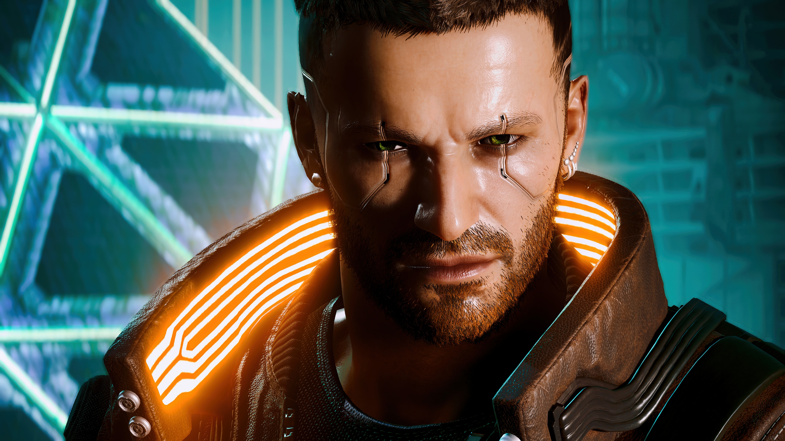
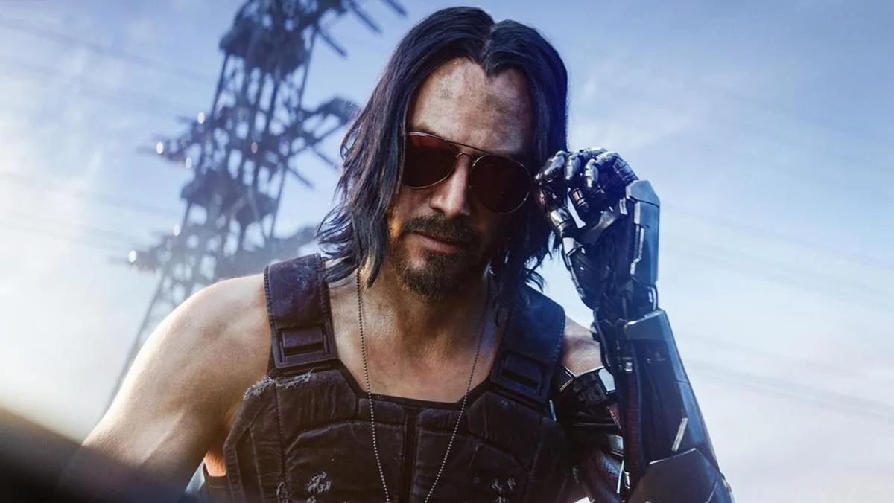
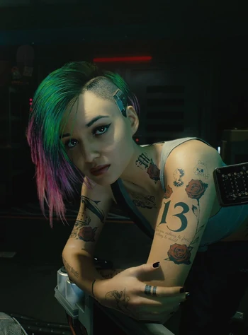
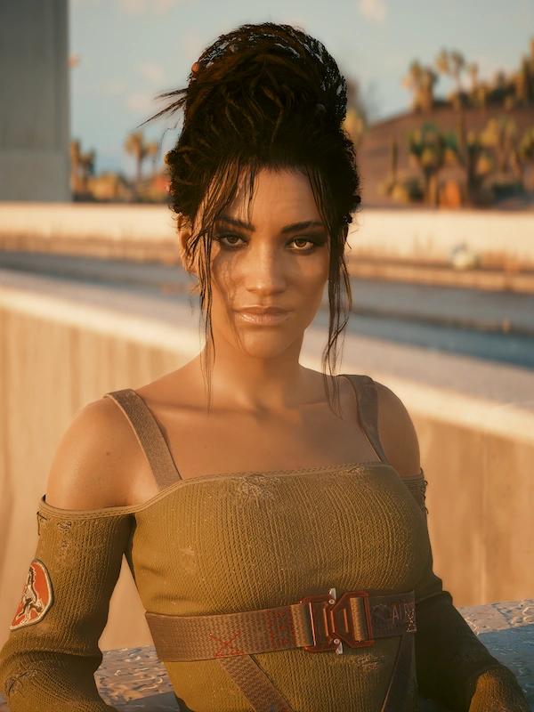

Ключевые персонажи

Главный герой
V
Наёмник из Найт-Сити, чье тело стало сосудом для сознания легендарного террориста Джонни Сильверхэнда. Ваши решения определяют его/ее судьбу.

Легенда рока
Джонни Сильверхэнд
Харизматичный лидер группы Samurai, борец против корпораций. Его сознание теперь существует в голове V.

Техник BRAIN DANCE
Джуди Альварес
Талантливый модификатор BRAIN DANCE и бывший член банды Mox. Становится близким другом (или больше) для женского V.

Кочевник Альдекальдо
Панам Палмер
Упрямая и преданная член клана кочевников. Верный союзник и возможный романтический интерес для мужского V.